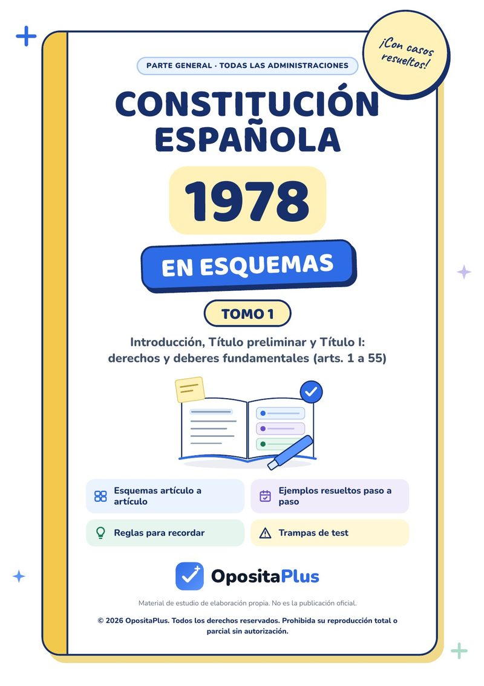
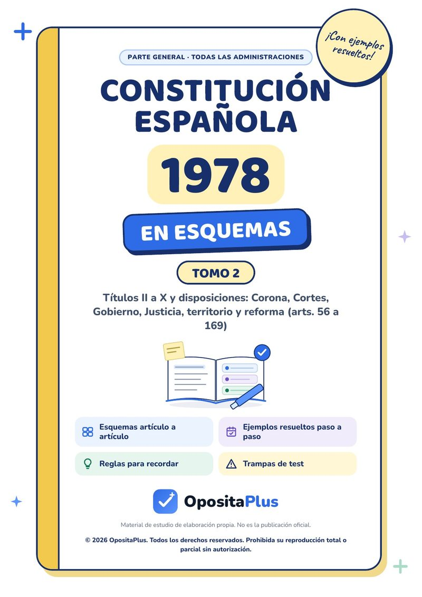
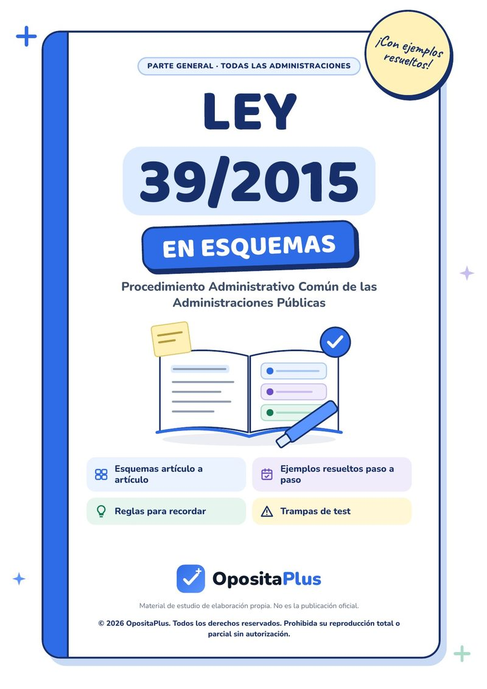
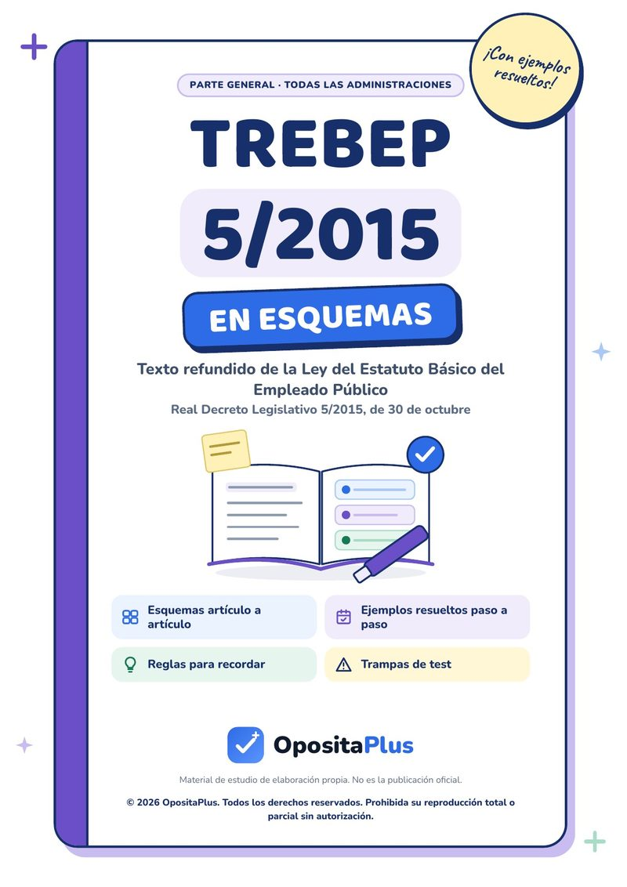
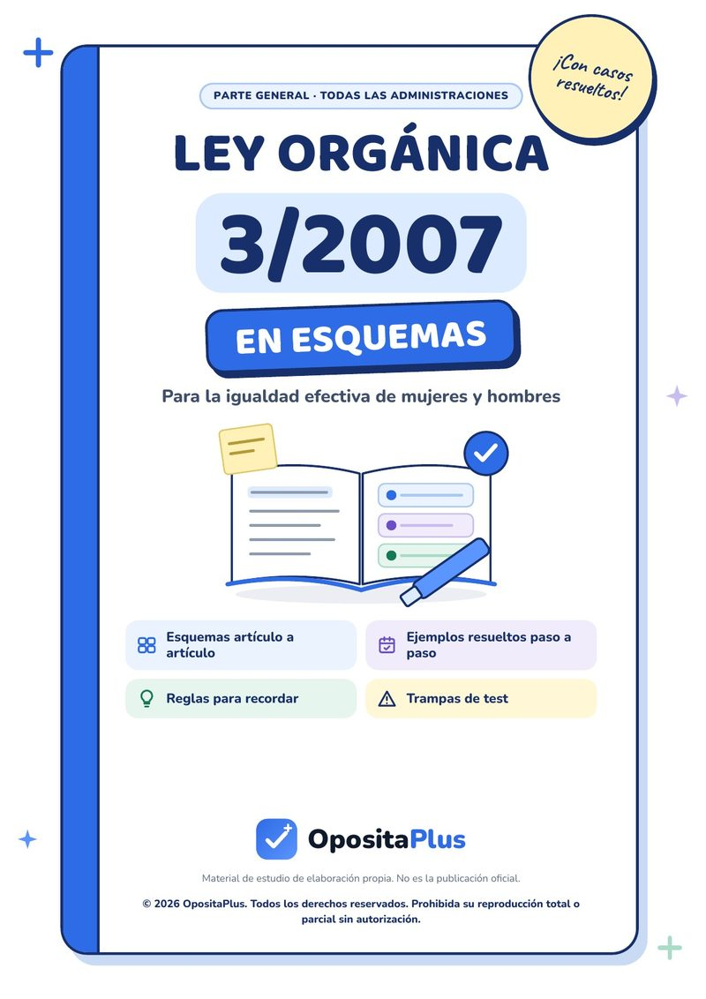
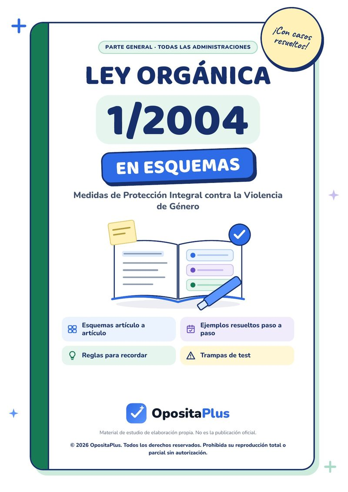

Test de oposiciones de Trabajo Social de la CARM (Murcia)
Tests de la oposición de Trabajo Social de la Comunidad Autónoma de la Región de Murcia (CARM), con todo su programa en la app de tests de oposiciones de la Región de Murcia: 72 temas y 7.140 preguntas con corrección razonada, la teoría de cada tema detrás de cada fallo y simulacros cronometrados.
Empezar gratis en iPhone o Android Hacer un test de muestraDe dónde sale este temario
- Administración convocante
- Comunidad Autónoma de la Región de Murcia
- Cuerpo o categoría
- Cuerpo Técnico
- Convocatoria
- Orden de 27 de abril de 2016 de la Consejería de Hacienda y Administración Pública, Anexo II · Orden de 30 de abril de 2025 de la Consejería de Economía, Hacienda, Fondos Europeos y Transformación Digital (materias específicas)
- Publicación
- BORM nº 113, de 17 de mayo de 2016, anuncio 4228 · BORM nº 105, de 9 de mayo de 2025, anuncio 2097
- Programa
- Ver el programa oficial (PDF)
- Revisado el
- 4 de septiembre de 2026
Test de Trabajo Social: 10 preguntas de muestra
Estas son preguntas reales del primer test del tema 1, el mismo que tienes gratis en la app. Pulsa la opción que creas correcta y verás al momento si aciertas y por qué.
-
Tema 1. Constitución, Estatuto de Autonomía y Unión Europea
1. ¿Cuál de estos derechos NO puede recabarse mediante recurso de amparo ante el Tribunal Constitucional?
Ver la respuesta
Respuesta correcta: B) El derecho a la propiedad privada (art. 33)
El amparo cubre el art. 14, la Sección 1.ª del Capítulo II (arts. 15 a 29) y la objeción de conciencia del art. 30.2; la propiedad está en la Sección 2.ª.
Constitución, art. 53.2
-
Tema 1. Constitución, Estatuto de Autonomía y Unión Europea
2. Sobre los estados del art. 116 CE, ¿qué afirmación es correcta?
Ver la respuesta
Respuesta correcta: D) Todas son correctas
El de alarma lo declara el Gobierno por decreto hasta quince días (prorrogable con autorización del Congreso); el de excepción, el Gobierno previa autorización del Congreso; el de sitio, el Congreso por mayoría absoluta a propuesta del Gobierno.
Constitución, art. 116.2-4
-
Tema 1. Constitución, Estatuto de Autonomía y Unión Europea
3. Si en la primera votación de investidura el candidato no obtiene la mayoría absoluta del Congreso:
Ver la respuesta
Respuesta correcta: A) Se vota de nuevo 48 horas después, por mayoría simple
El art. 99.3 prevé una nueva votación cuarenta y ocho horas después de la anterior, en la que basta la mayoría simple.
Constitución, art. 99.3
-
Tema 1. Constitución, Estatuto de Autonomía y Unión Europea
4. Sobre el Consejo General del Poder Judicial, ¿qué afirmación es correcta?
Ver la respuesta
Respuesta correcta: B) Cada Cámara elige diez de sus veinte vocales
El art. 567.2 LOPJ reparte los veinte vocales entre las Cámaras, diez cada una, por mayoría de tres quintos; el mandato es de cinco años (art. 122.3 CE).
LOPJ, art. 567.2; Constitución, art. 122.3
-
Tema 1. Constitución, Estatuto de Autonomía y Unión Europea
5. Los cuatro magistrados del Tribunal Constitucional que propone el Senado se eligen:
Ver la respuesta
Respuesta correcta: D) Entre candidatos de las Asambleas autonómicas
El art. 16.1 LOTC dispone que los propuestos por el Senado se elijan entre las candidaturas presentadas por las Asambleas Legislativas de las Comunidades Autónomas.
LOTC, art. 16.1
-
Tema 1. Derecho internacional y protección de los derechos humanos
6. La Convención sobre los Derechos del Niño fue adoptada por la Asamblea General de las Naciones Unidas el:
Ver la respuesta
Respuesta correcta: C) 20 de noviembre de 1989
El 20 de noviembre de 1959 se adoptó la Declaración de los Derechos del Niño; España ratificó la Convención el 30 de noviembre de 1990.
Convención sobre los Derechos del Niño de 1989 · adopción
-
Tema 1. Derecho internacional y protección de los derechos humanos
7. Entre los propósitos de las Naciones Unidas, el art. 1.3 de la Carta incluye:
Ver la respuesta
Respuesta correcta: C) Cooperar en problemas económicos, sociales, culturales o humanitarios
El art. 1.3 habla de realizar la cooperación internacional en esos problemas y en el estímulo del respeto a los derechos humanos, sin distinción por raza, sexo, idioma o religión.
Carta de las Naciones Unidas, art. 1.3
-
Tema 1. Derecho internacional y protección de los derechos humanos
8. El derecho a un nivel de vida adecuado que asegure, entre otros, la asistencia médica y los servicios sociales necesarios lo proclama la DUDH en su artículo:
Ver la respuesta
Respuesta correcta: C) 25
El art. 25.1 añade los seguros en caso de desempleo, enfermedad, invalidez, viudez y vejez. El 22 es la seguridad social, el 23 el trabajo y el 28 el orden social e internacional.
DUDH, art. 25.1
-
Tema 1. Derecho internacional y protección de los derechos humanos
9. La Convención sobre los Derechos del Niño entró en vigor para España:
Ver la respuesta
Respuesta correcta: B) El 5 de enero de 1991
El 2/9/1990 entró en vigor con carácter general; el instrumento de ratificación español es de 30/11/1990 y se publicó en el BOE de 31/12/1990.
Convención sobre los Derechos del Niño, art. 49 · BOE-A-1990-31312
-
Tema 1. Derecho internacional y protección de los derechos humanos
10. El art. 2 de la Convención de 2006 define los «ajustes razonables» como las modificaciones y adaptaciones necesarias y adecuadas:
Ver la respuesta
Respuesta correcta: D) Que no impongan una carga desproporcionada, cuando se requieran en un caso particular
El ajuste es individual y está limitado por la carga desproporcionada o indebida; la Convención considera discriminación su denegación.
Convención sobre los derechos de las personas con discapacidad, art. 2
Temario completo de Trabajo Social
Estos son los 72 temas tal y como los enumera la convocatoria. En la app, cada uno lleva su introducción, sus puntos clave, los artículos que hay que llevar de memoria y sus tests con corrección razonada.
Parte general
Constitución, Estatuto y Unión Europea · Administración regional y función pública · presupuesto · acto, procedimiento, sanciones y expropiación · contratación · responsabilidad y datos · organización y calidad · informática, prevención, igualdad, transparencia y administración electrónica
- 1Constitución, Estatuto de Autonomía y Unión Europea100 preguntas
- 2La Administración Pública y la Administración regional100 preguntas
- 3La función pública regional100 preguntas
- 4El presupuesto de la Comunidad Autónoma100 preguntas
- 5Los principios de la actividad administrativa100 preguntas
- 6El acto administrativo, los plazos y la revisión en vía administrativa100 preguntas
- 7El procedimiento administrativo común y los derechos de los ciudadanos100 preguntas
- 8El procedimiento sancionador y el procedimiento expropiatorio100 preguntas
- 9Los procedimientos de contratación100 preguntas
- 10Responsabilidad de la Administración, protección de datos y secreto profesional100 preguntas
- 11La organización, su cultura, la dirección y los recursos humanos100 preguntas
- 12La calidad en la Administración pública100 preguntas
- 13Sistemas informáticos, redes, internet y la red corporativa de la CARM100 preguntas
- 14Seguridad y salud en el trabajo y la Ley 31/1995100 preguntas
- 15Normativa de igualdad, perspectiva de género e informes de impacto100 preguntas
- 16Transparencia, acceso a la información pública y buen gobierno100 preguntas
- 17Sede electrónica, identificación y firma, documento y expediente electrónicos, ENI, ENS y Red SARA100 preguntas
Programa de materias específicas
Servicios sociales de la Región y del Estado · Seguridad Social, dependencia y discapacidad · método, modelos y técnicas del trabajo social · menores, familia, mayores, exclusión e igualdad
- 1Derecho internacional y protección de los derechos humanos100 preguntas
- 2La política social europea100 preguntas
- 3Entidades públicas estatales con competencias en servicios sociales100 preguntas
- 4Acuerdos Estado-comunidades autónomas en servicios sociales100 preguntas
- 5Competencias regionales y Ley 3/2021 de Servicios Sociales de la Región de Murcia100 preguntas
- 6La Consejería de Política Social, Familias e Igualdad80 preguntas
- 7El Instituto Murciano de Acción Social (IMAS)100 preguntas
- 8Los servicios sociales en las entidades locales100 preguntas
- 9La Seguridad Social: Régimen General, regímenes especiales, acción protectora e ingreso mínimo vital100 preguntas
- 10Pensiones no contributivas y prestaciones económicas de la antigua LISMI100 preguntas
- 11El Sistema para la Autonomía y Atención a la Dependencia: normativa estatal100 preguntas
- 12Reconocimiento del grado y del derecho a las prestaciones de dependencia en la Región de Murcia100 preguntas
- 13Registro, autorización, acreditación e inspección de servicios sociales100 preguntas
- 14La protección a la familia y la conciliación100 preguntas
- 15La protección por desempleo: nivel contributivo y nivel asistencial100 preguntas
- 16La asistencia social penitenciaria y los grados de tratamiento100 preguntas
- 17La acción social y el Estado de bienestar: evolución y situación actual100 preguntas
- 18El análisis de necesidades sociales y la taxonomía de Bradshaw100 preguntas
- 19El método en trabajo social100 preguntas
- 20Modelos de intervención en trabajo social100 preguntas
- 21Niveles de intervención: caso, grupo y comunidad100 preguntas
- 22Técnicas e instrumentos en trabajo social100 preguntas
- 23SEGISS y SIESS: los sistemas estatales de información de servicios sociales100 preguntas
- 24Deontología y ética profesional del trabajo social100 preguntas
- 25Trabajo en equipo, equipos multidisciplinares y trabajo interdisciplinar100 preguntas
- 26La planificación en servicios sociales: tipos, principios, fases e indicadores100 preguntas
- 27La evaluación en servicios sociales: tipos y procesos100 preguntas
- 28La iniciativa privada en la acción social: tercer sector y voluntariado100 preguntas
- 29Coordinación institucional y trabajo en red100 preguntas
- 30Los servicios sociales de atención primaria en la Región de Murcia100 preguntas
- 31Servicios sociales especializados para personas con discapacidad100 preguntas
- 32La CIF frente a la CIDDM100 preguntas
- 33Derechos de las personas con discapacidad, grado y medidas de apoyo100 preguntas
- 34Empleo de las personas con discapacidad100 preguntas
- 35El trabajo social en el sistema educativo y los EOEP100 preguntas
- 36Prevención, seguimiento y control del absentismo y del abandono escolar100 preguntas
- 37Servicios sociales para personas mayores100 preguntas
- 38El envejecimiento individual y de la población100 preguntas
- 39Servicios sociales especializados para menores y familia100 preguntas
- 40Demografía, movimiento natural, censo y padrón100 preguntas
- 41Los hogares y las nuevas formas familiares en España80 preguntas
- 42Derecho de familia y puntos de encuentro familiar100 preguntas
- 43Protección a la infancia: riesgo, desamparo, tutela, guarda, acogimiento y adopción100 preguntas
- 44La responsabilidad penal de los menores y las competencias de la Región de Murcia100 preguntas
- 45Inclusión social, exclusión, pobreza y el indicador AROPE100 preguntas
- 46El proceso de socialización y sus agentes80 preguntas
- 47Desarrollo evolutivo hasta la edad adulta y necesidades100 preguntas
- 48La mediación: escolar, familiar, laboral e intercultural100 preguntas
- 49Las personas inmigrantes y la Ley Orgánica 4/2000 de extranjería100 preguntas
- 50Protección social en Murcia y la Renta Básica de Inserción100 preguntas
- 51El Plan de Salud de la Región de Murcia y el trabajo social sanitario100 preguntas
- 52La salud mental en la Región de Murcia y el trabajo social en salud mental100 preguntas
- 53La Ley 6/1997 de drogas, el Plan Regional sobre Adicciones y el trabajo social en adicciones100 preguntas
- 54Género, políticas de igualdad, acción positiva y transversalidad100 preguntas
- 55La violencia de género: marco legal, conceptos, tipos y recursos100 preguntas
Leyes en esquemas para Trabajo Social
Nueve de nuestros cuadernos en PDF desarrollan leyes que se preguntan en tu temario. Cada uno va artículo a artículo, con ejemplos y casos resueltos, reglas para recordar y trampas de test. Se compran aparte de la app.

Constitución · Tomo 1Sale en el tema 1 de la parte general.7,99 €
Constitución · Tomo 2Sale en los temas 1 y 5 de la parte general.7,99 €
Ley 39/2015Sale en los temas 6, 7, 8, 10 y 17 de la parte general.7,99 € Ley 40/2015Sale en los temas 2, 5, 8, 10 y 17 de la parte general y el tema 30 de la parte específica.7,99 €
Ley 40/2015Sale en los temas 2, 5, 8, 10 y 17 de la parte general y el tema 30 de la parte específica.7,99 €

TREBEPSale en el tema 3 de la parte general y el tema 14 de la parte específica.7,99 €
LO 3/2007Sale en el tema 15 de la parte general y el tema 54 de la parte específica.7,99 €
LO 1/2004Sale en el tema 55 de la parte específica.7,99 € LO 3/2018Sale en el tema 10 de la parte general.7,99 €
LO 3/2018Sale en el tema 10 de la parte general.7,99 €
 Ley 31/1995Sale en el tema 14 de la parte general.7,99 €
Ley 31/1995Sale en el tema 14 de la parte general.7,99 €
¿Los quieres todos? El pack completo de la parte general trae los nueve por 53,93 € en lugar de 71,91 €.
Preguntas frecuentes
¿Qué entra en la oposición de Trabajo Social de la CARM?
El programa oficial de Trabajo Social consta de 72 temas, repartidos en parte general y programa de materias específicas. En OpositaPlus tienes los 72 con su introducción, sus puntos clave, los artículos que hay que memorizar y 7.140 preguntas de test con corrección razonada.
¿De dónde sale este temario?
De Orden de 27 de abril de 2016 de la Consejería de Hacienda y Administración Pública, Anexo II · Orden de 30 de abril de 2025 de la Consejería de Economía, Hacienda, Fondos Europeos y Transformación Digital (materias específicas), publicada en BORM nº 113, de 17 de mayo de 2016, anuncio 4228 · BORM nº 105, de 9 de mayo de 2025, anuncio 2097. El temario de la app se transcribe literalmente de ese programa, sin refundirlo ni resumirlo, y se revisa cuando sale una convocatoria nueva.
¿Cuántas preguntas tiene cada tema?
Entre 80 y 100 preguntas, repartidas en tests de unas veinte preguntas y con intentos ilimitados. En esta oposición son 7.140 preguntas en total. Cada respuesta explica por qué es la correcta y en qué norma se apoya.
¿Hay exámenes de años anteriores de Trabajo Social?
Sí. En la app tienes los exámenes oficiales de la OEP 2017 y la OEP 2018 y la OEP 2021, transcritos del cuadernillo con la letra correcta de la plantilla del tribunal, separados en turno libre y promoción interna.
¿Puedo hacer un test de Trabajo Social gratis?
Sí. En esta misma página tienes un test de muestra con preguntas reales, y en la app el primer test del tema 1 de la parte general y el de la específica son gratis para siempre, sin tarjeta y sin periodo de prueba.
¿Funciona en Android y en iPhone?
Sí. OpositaPlus está disponible para iPhone, iPad y Android, con el mismo contenido, modo oscuro y funcionamiento sin conexión.
Haz ya tu primer test de Trabajo Social
El primer test del primer tema de la parte general y el de la específica son gratis para siempre, sin tarjeta y sin periodo de prueba que se acabe.
Descargar OpositaPlus